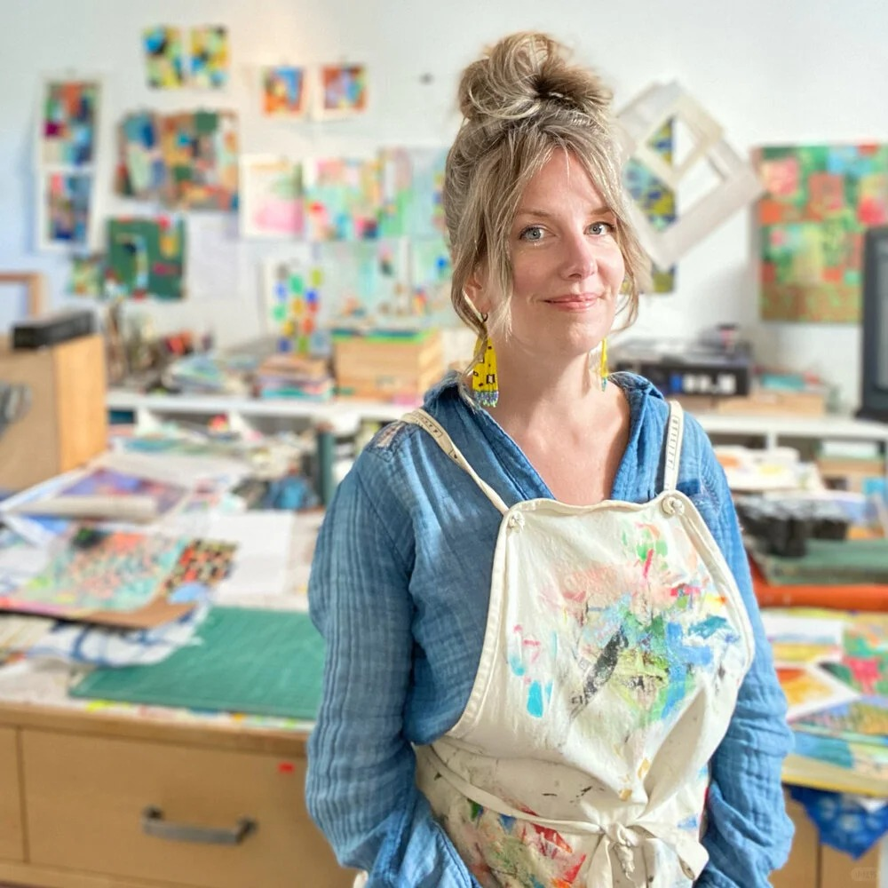
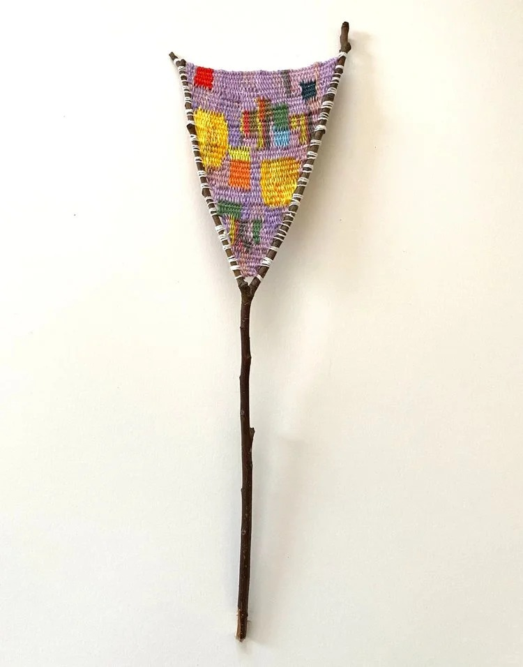
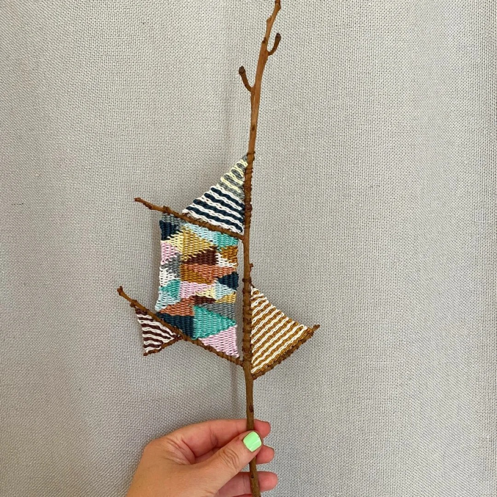
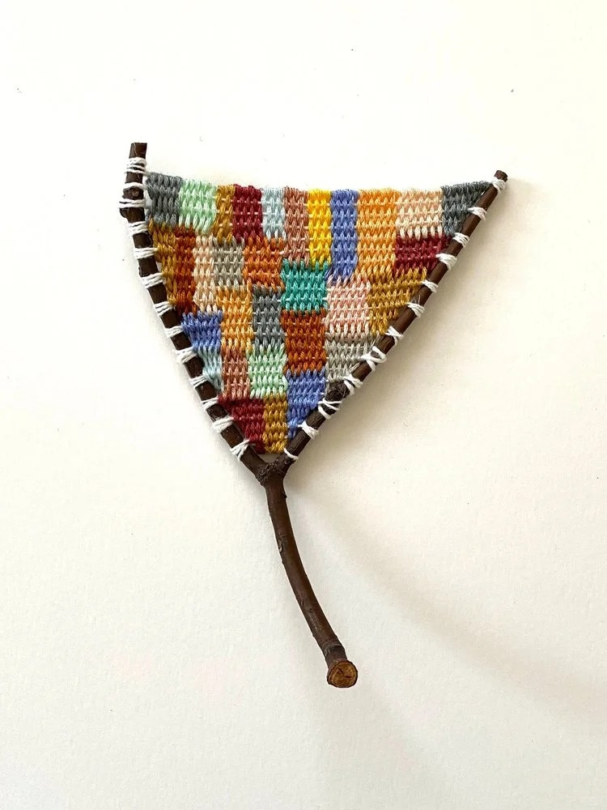
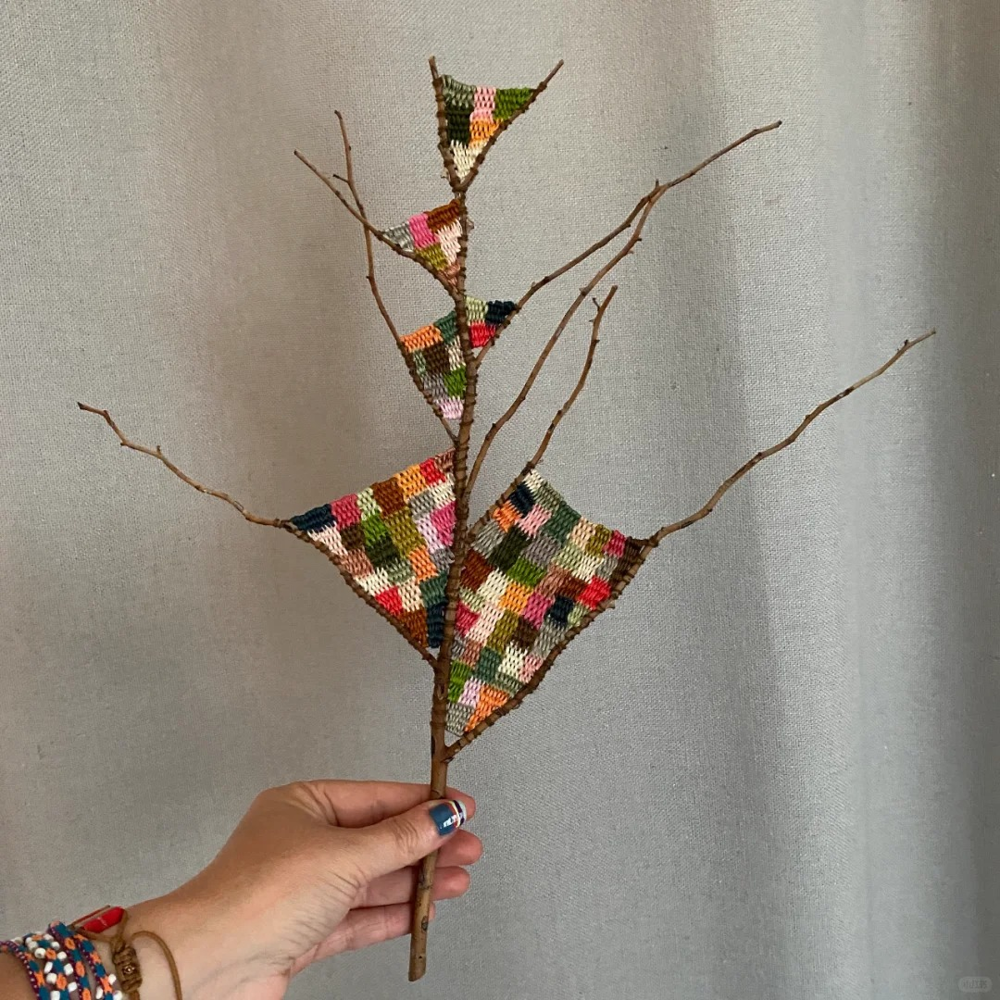
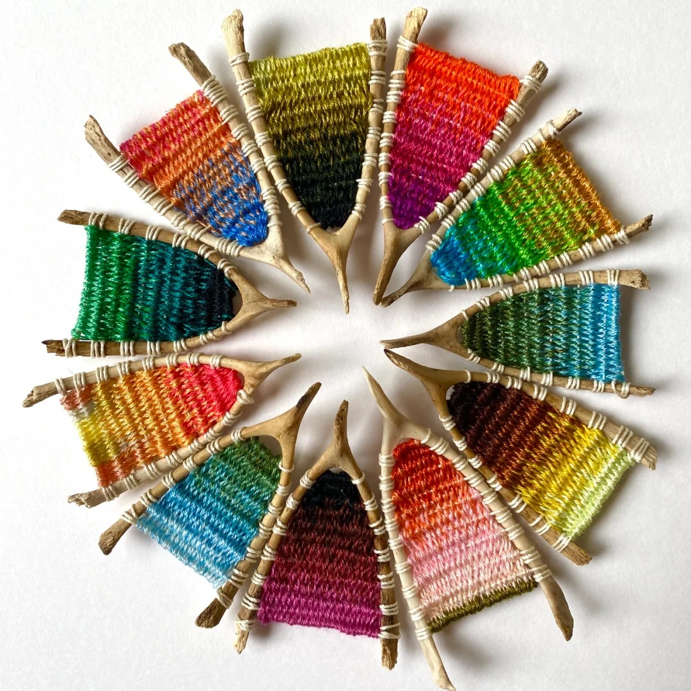
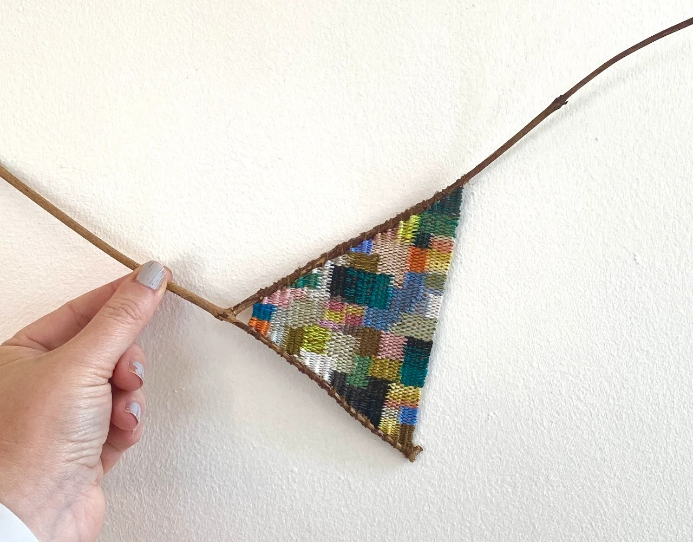

HOME
Kaci Smith
Weaving rainbows in the branches.
Tree branches are the natural framework for American artist Kaci Smith's miniature blankets, where colorful threads hang from the branches and are woven like brilliant rainbows blooming on a canvas of branches. The stability of the weaving combined with the fragility of the branches gives her work a unique aesthetic.
Smith's primary artistic endeavors are painting and collage design, and her first woven twig piece was made during the 20-year epidemic. At the time, she started knitting at home to pass the time because she couldn't get to her studio. Depending on the size of the branch or the complexity of the pattern, a piece can take several days to complete.
Even though knitted blankets are “painted” with yarn, they can't be rushed. The process teaches Smith to be patient and to find a particular rhythm in repetition. So the craft has been a way for her to find inner peace or meditation in addition to her main job.
Smith was able to find a unique outlet and vehicle for creative output when she couldn't get out during the epidemic. She uses her work to encourage positive self-expression and reminds us that creativity is not limited by time, space or resources.







Click it and see more works.